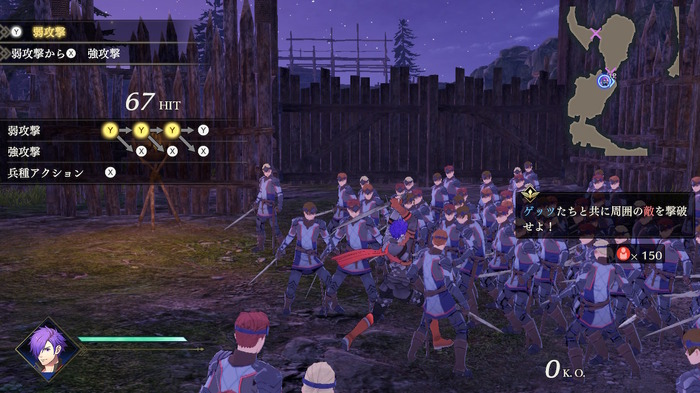
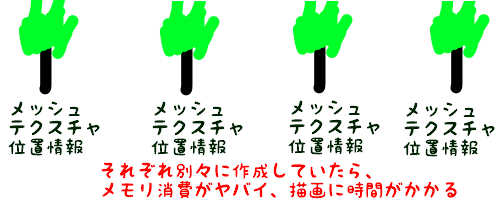
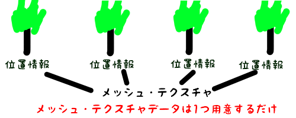
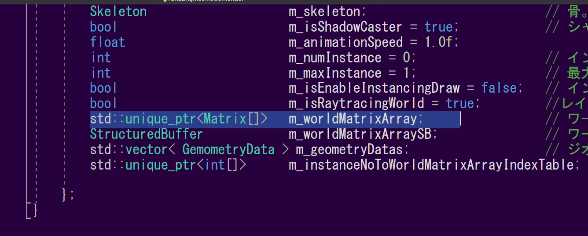

第三章では、Fly Wightパターンについて見ていきましょう。
Fly Weightパターンは、
等価なインスタンスを別々の箇所で使用する際に、1つのインスタンスを再利用するデザインパターンです(Wikipediaより)。
ゲームでは様々な箇所でFly Weightパターンが利用されていますが、今回はその中でも特にゲーム実行時に影響の大きい
インスタンシング描画について見ていきましょう。
ゲームでは、以下のように同じオブジェクトを大量に描画しなければならない場面が存在します。

ファイアーエムブレム無双 風化雪月より
敵キャラクターが大量に描画されているのが分かるでしょうか。キャラクターだけでなく、草や木などのオブジェクトを大量に描画しなければならない場面もありますよね。
この際に、1つのオブジェクトごとにモデルデータを用意していては、メモリを大量消費してしまうことになりますし、処理も遅くなってしまいます。

オブジェクトの数が少なければ大丈夫ですが、何百・何千個ともなるとメモリや処理速度への影響は計り知れません。
では、どうすればいいのでしょうか。
この場合、描画するオブジェクトのモデルが同じなのであれば、そのモデルデータを再利用しましょう。
位置情報はそれぞれ別なので、これは再利用できませんね。

これが、インスタンシング描画の概念になります。
k2Engineでは、ModelRenderクラスにインスタンシング描画の機能が実装されています。ModelRenderに行列の配列を持たせることで、インスタンシング描画を実装しています。
1つのモデルデータとこの行列配列により、1回のドローコールで一気にモデルを描画してしまいます。
